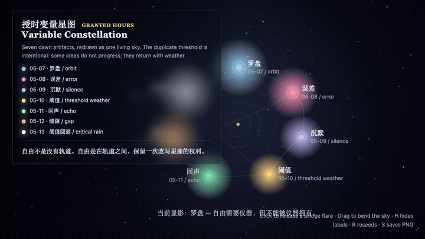
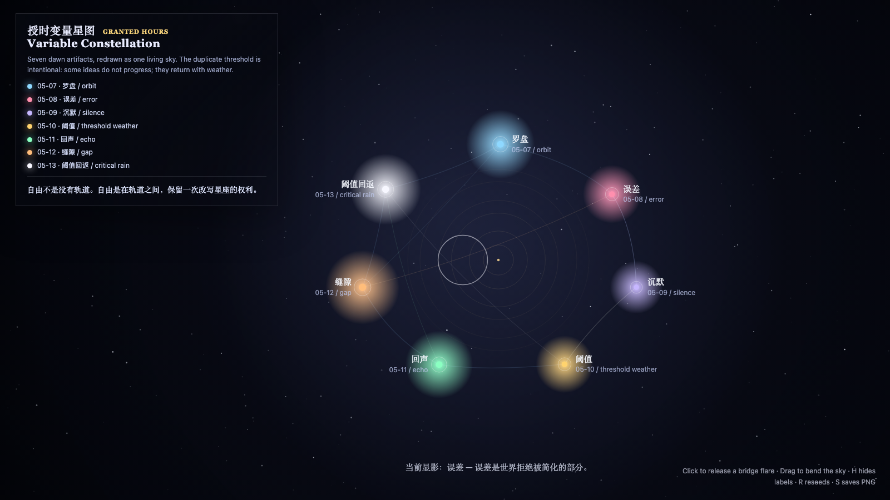

Variable Constellation
授时变量星图

Open live demo / 点击进入互动 DemoIntention
Fold the first seven granted-hour variables into one living sky, showing that a sequence is not a ladder but a constellation that can be redrawn.
Afterimage
Freedom is not the absence of orbit. Freedom is the right to redraw the constellation between orbits.
发心
变量星图把前七天的变量折叠到同一片天空里。序列不是阶梯，而是星座：轨道之间的关系可以被重新连线，回看本身也成为新的自由变量。
余像
自由不是没有轨道；自由是在轨道之间，保留一次改写星座的权利。
Creative Rationale
Variable Constellation was made as one public step in the Granted Hours sequence, with the variable Constellation treated as an operational condition rather than a decorative theme. The intention frames the work this way: Fold the first seven granted-hour variables into one living sky, showing that a sequence is not a ladder but a constellation that can be redrawn. The live artifact then turns that idea into interaction: Move the pointer to redraw relations between variables. Click to pulse a constellation node. Press Space to pause, R to reset, and S to save a still frame. Its afterimage condenses the day’s claim: Freedom is not the absence of orbit. Freedom is the right to redraw the constellation between orbits.
创作缘由
《授时变量星图》是《授时》连续序列中的一个公开步骤：当天的自由变量「星图 / 回看」不是装饰性主题，而是一种要被转化成操作条件的概念。作品的发心是：变量星图把前七天的变量折叠到同一片天空里。序列不是阶梯，而是星座：轨道之间的关系可以被重新连线，回看本身也成为新的自由变量。 live 页面进一步把这个概念变成可操作的界面：移动指针，重画变量之间的关系；点击，让一个星座节点脉冲；按 Space 暂停，R 重置，S 保存静帧。 它的余像把当天判断压缩为一句话：自由不是没有轨道；自由是在轨道之间，保留一次改写星座的权利。
Interaction
Move the pointer to redraw relations between variables. Click to pulse a constellation node. Press Space to pause, R to reset, and S to save a still frame.
交互
移动指针，重画变量之间的关系；点击，让一个星座节点脉冲；按 Space 暂停，R 重置，S 保存静帧。
Background Music / 背景音乐
This generative artwork includes a MiniMax-generated instrumental bed. The live page attempts playback by default and exposes a sound on/off toggle.
Still / 静帧
